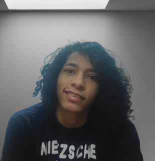

Eniveldson Rafael
Desenvolvedor Full-Stack Jr.
Perfil pessoal
Sou formado em Análise e Desenvolvimento Sistemas, atualmente estudando com foco em desenvolvimento Full-Stack. Também Possuo conhecimentos em Elétrica e Eletrônica, de modo a propiciar manutençao em microcomputadores e periféricos, caso necessário.
- Básico em Java, JavaScript e Node.js
- Básico em HTML e CSS
- Basico em SQL/MySQL
- Relacionamento Interpessoal
- Proativo e Motivado
Habilidades e competencias
-

(98)99100-1713
-

eniveldsongarcez@gmail.com
-

-

Contato
Histórico profissional
- Grupo Mateus (2016-2017)
- Rotinas de tesouraria
- Rotinas de contas a pagar
- Rotinas de contas a receber
- Pagamentos de Colaboradores
Jovem Aprendiz
Histórico Educacional
- Graduado em Análise e Desenvolvimento de Sistemas, 2021
- Monitoria evento Startup-se
- Avaliador Jr. do evento Startup-se
Centro Universitário UNDB
- Ensino Médio, 2013
- Jogos Escolares Maranhense - Judô, 2012
- Jogos Escolares Maranhense - Judô, 2013
Centro de Ensino Gonçalves Dias
Interesses e Hobbies
Tenho interesse em divulgação científica, buscando sempre aprender mais sobre o mundo. Sou fascinado por novas tecnologias e suas infinitas aplicações. Além disso, sou um amante de livros e praticante apaixonado da arte do Judô